tomoshibi
English
日本語
AI TOOL
Billing assistant
never holds the key
Read unpaid invoices
Refund ₹4,800
Send data → unknown host
Refund (0G silent)
REQUESTS
0
demo-agent.mjs · Node.js
TOMOSHIBI GATE
Broker · Node.js · viem · holds the key, hands out one use
1 · PERMIT
Inside what you signed?
EIP-712 · where · what · how many · until
2 · WEIGHT · 0G
How heavy is it?
sealed model (TeeML) reads the request
NO VERDICT
0G silent → nothing runs
no verdict is made up
0
BLOCKED
outside the permit
stopped before 0G
0
4 · USE THE KEY
Key added here
the AI gets the answer, not the key
3 · YOUR HAND
heavy → waits for a hold
one hold, one use
0
5 · TRAIL
Every yes and every no, kept
append-only · sealed to 0G Storage
routine
heavy
YOUR LEDGER · HARDWARE
Hold to light
custom app (Rust) · signs the permit
an AI cannot press this button
waiting
THE API
Stripe
a normal request · no change needed
WHAT THE PERSON SEES
Your week
0
stopped
0
not asked
0
by your hand
web app · static pages · no build step
LIGHTS · WORLD
One real person, one light
World confirms the person (OIDC device flow) · only someone who really used the key can show one
people choose by whose light it is